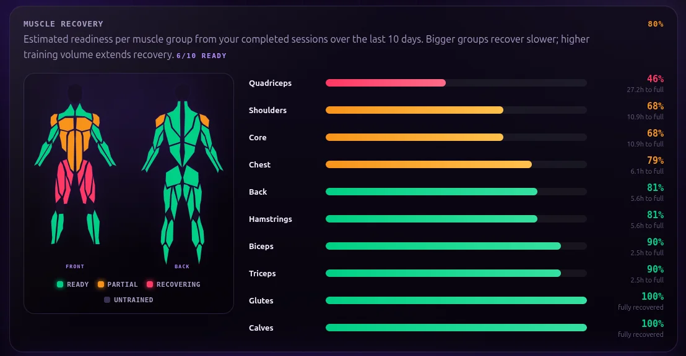
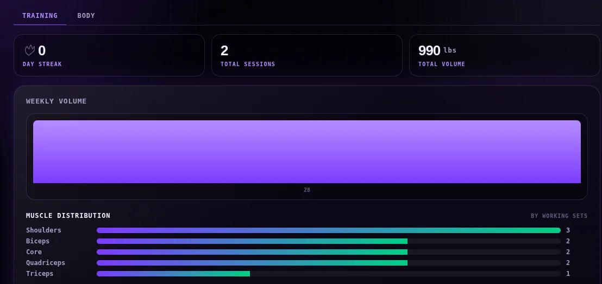
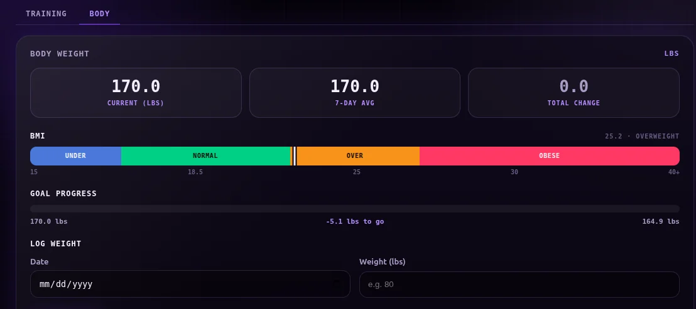
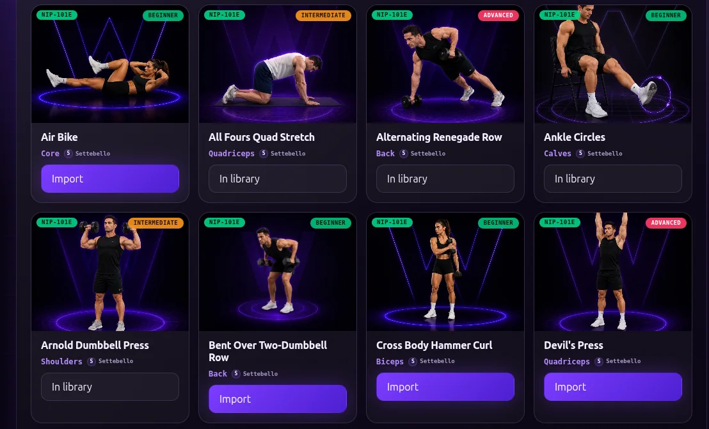

Open it and start training
There is nothing to sign up for, no email to confirm, and no password to forget. The app is ready the moment the page loads.
Free · No sign-up · Works offline
Workstr is a free workout tracker that lives in your browser. Log your sessions, watch your progress build, and see exactly which muscles are ready to train again — no account, no app store, nothing to install.

Your muscles, mapped after every session
There is nothing to sign up for, no email to confirm, and no password to forget. The app is ready the moment the page loads.
Add Workstr to your home screen and use it at the gym even with no signal. Every set is saved the moment you log it.
Your training history is stored on your device, not on someone else's server. Export it whenever you like — it's yours.
From picking today's exercises to seeing months of progress, Workstr keeps the whole loop in one place.

Every session feeds your dashboard: weekly volume, total sessions, training streaks, and how your sets are split across muscle groups. No spreadsheets — just open the app and see exactly where you stand.

Log your body weight in seconds and let Workstr handle the rest: a 7-day average that smooths out the daily noise, BMI at a glance, and a clear line showing how far you are from your goal.

Browse a growing exercise library with photos, difficulty levels, and target muscles. Import the ones you like with one tap, favourite what you use most, and add your own for anything we missed.
Workstr is free and opens right in your browser. Your first workout is two clicks away.
Open WorkstrBuilt on the open Nostr network — share finished workouts and discover community programs whenever you choose.